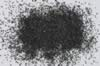

|
DOCUMENTATION_FORMAT: MINERAL
SAMPLE_ID: HS231.2B, HS231.3B, HS231.4B
MINERAL_TYPE: Oxide
MINERAL: Ilmenite
FORMULA: Fe+2TiO3
FORMULA_HTML: Fe+2TiO3
COLLECTION_LOCALITY: Norway
ORIGINAL_DONOR: Hunt and Salisbury Collection
CURRENT_SAMPLE_LOCATION: USGS Denver Spectroscopy Laboratory
ULTIMATE_SAMPLE_LOCATION: USGS Denver Spectroscopy Laboratory
SAMPLE_DESCRIPTION:
Forms series with Geikielite.
"O-10. Ilmenite. Norway (231B). Ilmenite, FeTiO3, is sometimes
found in veins or large masses as a product of magmatic segregation, and
as beds or lenses in metamorphic rocks. Most commonly, it is an
accessory mineral in igneous rocks, and it is frequently associated with
the heavy fraction of beach and river sands. As in the case of this
sample, ilmenite is typically an opaque, almost spectrally featureless
mineral in the visible and near-infrared. The relative reflectivity of
the various particle sizes is typical of an opaque mineral--i.e., the
smaller the particle size, the lower the reflectivity. Pure ilmenite is
considered to be a titanate of ferrous iron (Fe2+ Ti4+O3)
rather than a double sesquioxide of ferric iron and titanium (Fe3+
Ti3+ O3). In ilmenite ferric oxide is often present and can
introduce features typical of the Fe3+ ion. When as little as 1% Ti
is substituted in Fe2O3, the titanium acts as a donor and is all
ionized to Ti4+ and Fe2+, and the Fe2+ produces a broad
feature centered near 1.5µ. We have already observed a broad feature
centered near 1.8µ in the pyroxenes (see Part I) which was attributed
to the Fe2+ ion in a disordered octahedral site. The hydrated
titanium ion (Ti3+ 6H2O) produces a very broad spectral feature
extending from 0.5µ into the infrared with a maximum at 2.0µ. The
overall opacity of ilmenite is probably caused by a combination of all
these features, broadened by defects, edge effects and the presence of
impurities, as well as conduction bands due to both the iron and
titanium extending out from the ultraviolet into the visible."
Hunt, G.R., J.W. Salisbury, and C.J. Lenhoff, 1971, Visible and near-infrared spectra of minerals and rocks: III. Oxides and hydroxides. Modern Geology, v. 2, p. 195-205.
Grain size fractions are indicated by the extension after the sample number:
.2B = <74 µm
.3B = 74-250 µm
.4B = 250-1200 µm
IMAGE_OF_SAMPLE:

END_SAMPLE_DESCRIPTION.
XRD_ANALYSIS:
40 kV - 30 mA, 7.3-9.5 keV
Files: ilmnt231.out, -.mdi, ground once; ilm231-2_*, ground twice;
ilm231-3.*, same material as ilmnt231
References: JCDPS 29-733 (ilmenite) and 24-0074 (hematite);
Huebner's reference patterns; SEM X-ray spectroscopy; light optical
microscopy
Found: ilmenite, minor hematite and orthopyroxene, trace muscovite.
Also weak unidentified reflections at 4.06, 2.94, 2.101, 2.028,
1.70, 1.44, and 1.395 Angstroms
Sought but not found: Quartz
Comment: Very well crystallized ilmenite and hematite. Observed
hematite as exsolution lamellae in ilmenite using BSE imaging.
Minor phases can fractionate from dense oxides during sample
preparation, so their peak intensities are variable.
J.S. Huebner, J. Pickrell, T. Schaefer, written communication 1994
END_XRD_ANALYSIS.
COMPOSITIONAL_ANALYSIS_TYPE: None # XRF, EPMA, ICP(Trace), WChem
COMPOSITION_TRACE:
None
COMPOSITION_DISCUSSION:
None
END_COMPOSITION_DISCUSSION.
MICROSCOPIC_EXAMINATION:
Not done yet
END_MICROSCOPIC_EXAMINATION.
SPECTROSCOPIC_DISCUSSION:
END_SPECTROSCOPIC_DISCUSSION.
SPECTRAL_PURITY: 1b2_3_4_ # Ilmenite HS231.2B # 1= 0.2-3, 2= 1.5-6, 3= 6-25, 4= 20-150 microns
SPECTRAL_PURITY: 1b2b3c4u # Ilmenite HS231.3B # 1= 0.2-3, 2= 1.5-6, 3= 6-25, 4= 20-150 microns
SPECTRAL_PURITY: 1b2_3_4_ # Ilmenite HS231.4B # 1= 0.2-3, 2= 1.5-6, 3= 6-25, 4= 20-150 microns
{kind=link}